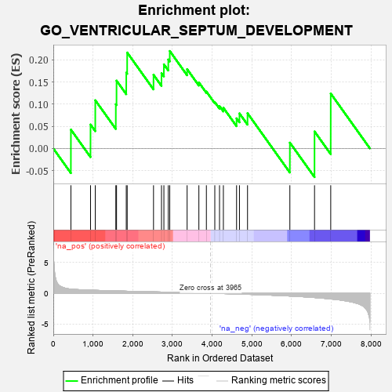
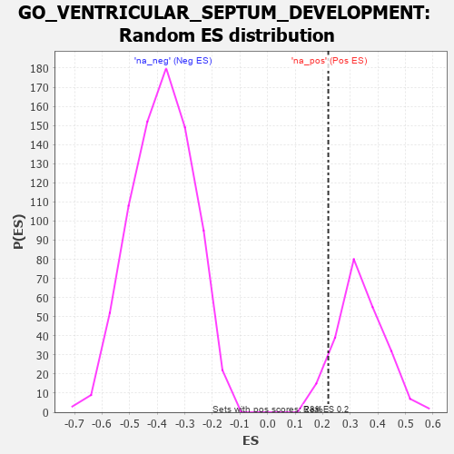

| | | Dataset | 7d |
| Phenotype | NoPhenotypeAvailable |
| Upregulated in class | na_pos |
| GeneSet | GO_VENTRICULAR_SEPTUM_DEVELOPMENT |
| Enrichment Score (ES) | 0.22017463 |
| Normalized Enrichment Score (NES) | 0.6590799 |
| Nominal p-value | 0.9173913 |
| FDR q-value | 0.9693484 |
| FWER p-Value | 1.0 |
Table: GSEA Results Summary

Fig 1: Enrichment plot: GO_VENTRICULAR_SEPTUM_DEVELOPMENT
Profile of the Running ES Score & Positions of GeneSet Members on the Rank Ordered List
| PROBE | GENE SYMBOL | GENE_TITLE | RANK IN GENE LIST | RANK METRIC SCORE | RUNNING ES | CORE ENRICHMENT | | 1 | SUFU | | | 443 | 0.665 | 0.0425 | Yes |
| 2 | MATR3 | | | 937 | 0.498 | 0.0540 | Yes |
| 3 | RBM15 | | | 1057 | 0.473 | 0.1089 | Yes |
| 4 | FZD1 | | | 1574 | 0.379 | 0.0999 | Yes |
| 5 | NPRL3 | | | 1592 | 0.375 | 0.1532 | Yes |
| 6 | GATA4 | | | 1837 | 0.330 | 0.1714 | Yes |
| 7 | SMAD4 | | | 1860 | 0.326 | 0.2167 | Yes |
| 8 | SALL4 | | | 2523 | 0.223 | 0.1664 | Yes |
| 9 | SLIT2 | | | 2724 | 0.195 | 0.1701 | Yes |
| 10 | NSD2 | | | 2784 | 0.185 | 0.1900 | Yes |
| 11 | FGFR2 | | | 2895 | 0.167 | 0.2009 | Yes |
| 12 | ACVR1 | | | 2932 | 0.161 | 0.2202 | Yes |
| 13 | SMAD7 | | | 3369 | 0.093 | 0.1791 | No |
| 14 | DCTN5 | | | 3665 | 0.049 | 0.1492 | No |
| 15 | XIRP2 | | | 3854 | 0.020 | 0.1285 | No |
| 16 | ROBO2 | | | 4066 | -0.018 | 0.1047 | No |
| 17 | AP2B1 | | | 4185 | -0.039 | 0.0956 | No |
| 18 | WNT11 | | | 4282 | -0.056 | 0.0919 | No |
| 19 | GATA3 | | | 4614 | -0.120 | 0.0680 | No |
| 20 | PTK7 | | | 4687 | -0.136 | 0.0791 | No |
| 21 | SLIT3 | | | 4890 | -0.175 | 0.0795 | No |
| 22 | PRDM1 | | | 5956 | -0.457 | 0.0131 | No |
| 23 | ROBO1 | | | 6577 | -0.699 | 0.0383 | No |
| 24 | PDE2A | | | 6985 | -0.927 | 0.1241 | No |
Table: GSEA details [plain text format]

Fig 2: GO_VENTRICULAR_SEPTUM_DEVELOPMENT: Random ES distribution
Gene set null distribution of ES for GO_VENTRICULAR_SEPTUM_DEVELOPMENT